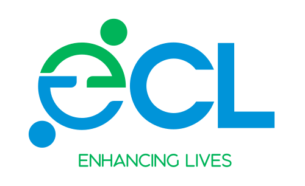

Board Games
A fun get-together for all ages and abilities, with bingo and quizzes. Drinks, snacks and prizes provided.
- When
- 18:30-19:45
- Where
- Molesey Hub, West Molesey KT8 2LG

Walton-on-Thames · Elmbridge
ECL runs weekly activity sessions for adults with learning disabilities and/or autism, at community venues in Walton and Molesey.
To join a session, call or email our co-ordinator, Pier.
A fun get-together for all ages and abilities, with bingo and quizzes. Drinks, snacks and prizes provided.
A lively, sociable evening for our younger and more physically able members: badminton, boccia, curling and more.
Chair exercises, coffee and a catch-up, arts and crafts projects, a monthly Lunch Club and more.
A monthly get-together for all ages and abilities. A great way for everyone to express themselves and have fun.
Sessions pause during the Easter, summer and Christmas breaks.
ECL began in 1994 as an advocacy service for local people with learning disabilities. Today we offer activities for young people and adults in Elmbridge with learning disabilities and/or autism.
We treat everyone as an individual. Our staff and volunteers work hard to make sure everyone gets the most out of every session, and our sessions also give parent carers some welcome respite.
“Since joining ECL, I’ve made friends and I feel more confident.”
Volunteers come from all walks of life, from local sixth formers to IT workers to retired accountants.
Without our volunteers we couldn’t continue. If you’d like to help, or just want to find out more, call Pier.
Call 07981 450320Donations buy arts and crafts materials, plants and pots, cooking ingredients, musical instruments and sports equipment.
To join a session or become a volunteer, contact our co-ordinator, Pier.
Facebook and Instagram: @eclwalton